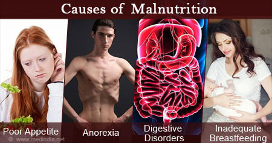

Malnutrition is the lack of proper nutrition, which can be caused by not eating for long periods of time, not eating enough, or your body not being able to use the food correctly.
The effects of malnutrition include:
Malnutrition is so common due to overweight people wanting to lose weight so the try to eat less.
Image by Medindia
Artificial Ingredients